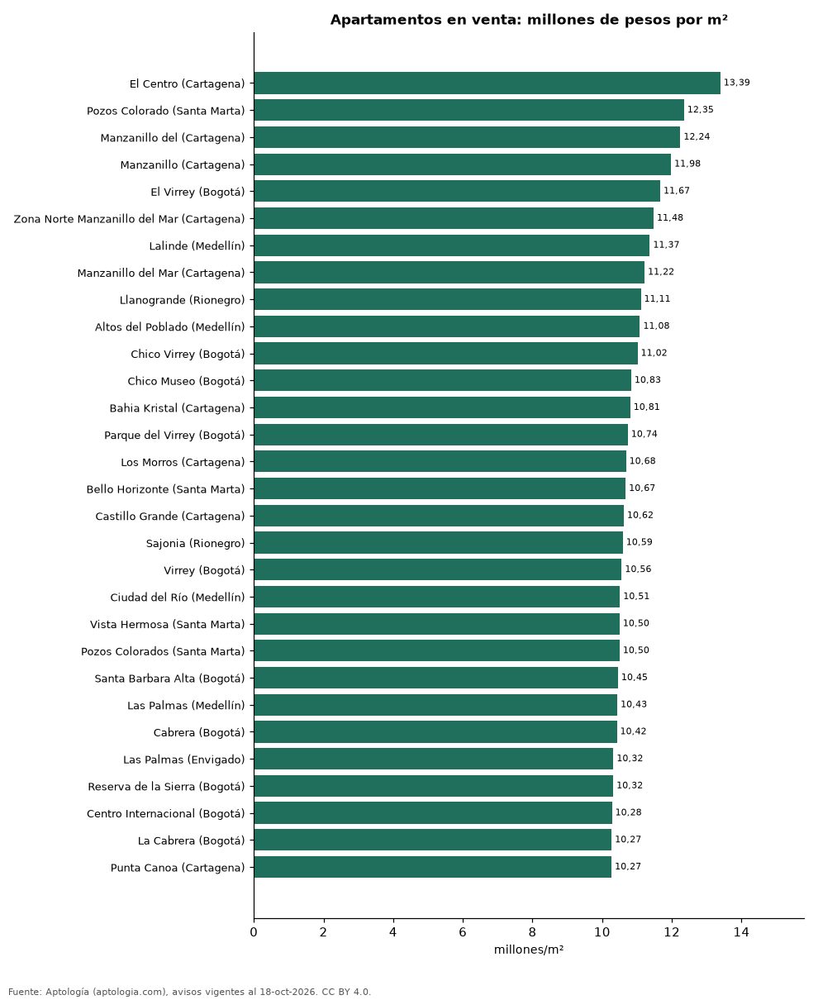

Los barrios más caros de Colombia: ranking del metro cuadrado de apartamentos en venta (octubre 2026)
Estudio con datos abiertos (CC BY 4.0). Versión original: https://github.com/elbroker/aptologia-datos/tree/main/estudios/barrios-mas-caros-de-colombia-precio-m2-2026 · DOI: 10.5281/zenodo.23462179
El barrio con el metro cuadrado de apartamento más caro de Colombia es El Centro (Cartagena), con 13,39 millones de pesos en la mediana. De los 40 barrios más caros, 13 están en Bogotá y 11 en Medellín y su área (Envigado, Sabaneta, Rionegro, El Retiro).
Resumen: comparamos 120.352 apartamentos en venta con área declarada en 689 barrios con 30 avisos o más.
Actualizado: 18 de octubre de 2026 (datos del 18 de octubre de 2026) · Próxima actualización: mensual.

Resumen
| Indicador | Valor |
|---|---|
| Barrio más caro | El Centro (Cartagena): 13,39 millones de pesos/m² |
| Del top 40 en Bogotá | 13 |
| Del top 40 en el área de Medellín | 11 |
| Barrios comparados | 689 |
Los 40 barrios más caros por m²
| Barrio | Ciudad | Millones de pesos por m² | Avisos |
|---|---|---|---|
| El Centro | Cartagena | 13,39 | 33 |
| Pozos Colorado | Santa Marta | 12,35 | 39 |
| Manzanillo del | Cartagena | 12,24 | 31 |
| Manzanillo | Cartagena | 11,98 | 124 |
| El Virrey | Bogotá | 11,67 | 91 |
| Zona Norte Manzanillo del Mar | Cartagena | 11,48 | 32 |
| Lalinde | Medellín | 11,37 | 80 |
| Manzanillo del Mar | Cartagena | 11,22 | 69 |
| Llanogrande | Rionegro | 11,11 | 58 |
| Altos del Poblado | Medellín | 11,08 | 191 |
| Chico Virrey | Bogotá | 11,02 | 36 |
| Chico Museo | Bogotá | 10,83 | 63 |
| Bahia Kristal | Cartagena | 10,81 | 34 |
| Parque del Virrey | Bogotá | 10,74 | 38 |
| Los Morros | Cartagena | 10,68 | 31 |
| Bello Horizonte | Santa Marta | 10,67 | 439 |
| Castillo Grande | Cartagena | 10,62 | 44 |
| Sajonia | Rionegro | 10,59 | 63 |
| Virrey | Bogotá | 10,56 | 66 |
| Ciudad del Río | Medellín | 10,51 | 259 |
| Vista Hermosa | Santa Marta | 10,50 | 36 |
| Pozos Colorados | Santa Marta | 10,50 | 498 |
| Santa Barbara Alta | Bogotá | 10,45 | 143 |
| Las Palmas | Medellín | 10,43 | 355 |
| Cabrera | Bogotá | 10,42 | 170 |
| Las Palmas | Envigado | 10,32 | 47 |
| Reserva de la Sierra | Bogotá | 10,32 | 36 |
| Centro Internacional | Bogotá | 10,28 | 93 |
| La Cabrera | Bogotá | 10,27 | 281 |
| Punta Canoa | Cartagena | 10,27 | 30 |
| Las Vegas | Envigado | 10,22 | 126 |
| Zona Norte la Boquilla | Cartagena | 10,22 | 32 |
| Gran America | Bogotá | 10,18 | 33 |
| Loma de los Mesa | Envigado | 10,17 | 65 |
| Santa Ana Oriental | Bogotá | 10,09 | 82 |
| Los Salados | El Retiro | 10,08 | 109 |
| Santa Marta | Santa Marta | 10,06 | 30 |
| Provenza | Medellín | 10,01 | 116 |
| La Boquilla | Cartagena | 10,00 | 384 |
| Salitre | Bogotá | 10,00 | 40 |
Precio pedido mediano por m² de apartamentos en venta.
Preguntas frecuentes
¿Cuál es el barrio más caro de Colombia? El Centro (Cartagena), con 13,39 millones de pesos por m² en la mediana de apartamentos en venta (octubre de 2026).
Metodología
- Fuente: exportes nocturnos de la base de datos de Aptología (aptologia.com) del 18 de octubre de 2026: avisos vigentes de vivienda en portales inmobiliarios de 13 países, recogidos por Aptología y vistos en línea entre el 11 y el 18 de octubre de 2026. Corte: 18 de octubre de 2026.
- Depuración: se eliminan duplicados exactos (misma ciudad, zona, tipo, precio, moneda, área, habitaciones y baños) y los precios fuera del percentil 1–99 de cada país, operación, moneda y tipo; el precio por m² usa solo avisos con área declarada entre 12 y 2.000 m² y también se recorta al P1–P99.
- Qué se mide: precios pedidos (publicados), no precios de cierre. En arriendo, el canon mensual sin administración, gastos comunes ni condominio.
- Muestra mínima: cada cifra publicada se apoya en al menos 30 avisos; las celdas con menos se omiten.
- Colombia: Precios en pesos colombianos, sin conversión de moneda.
- Limitaciones: la cobertura depende de los portales que recorre Aptología en cada país y es mayor en las ciudades grandes y en los segmentos medio-alto y alto; el área es la que declara el aviso, sin verificar; los nombres de zona vienen de los portales.
- Privacidad: solo se publican agregados; no se publica ningún dato personal, enlace a avisos ni nombre de anunciante.
- Datos abiertos: datos.csv, licencia CC BY 4.0.
Cómo citar
Pinzón Pineda, D. M. (2026). Los barrios más caros de Colombia: ranking del metro cuadrado de apartamentos en venta (octubre 2026). Aptología (aptologia.com). https://github.com/elbroker/aptologia-datos/tree/main/estudios/barrios-mas-caros-de-colombia-precio-m2-2026. Datos: datos.csv, licencia CC BY 4.0.